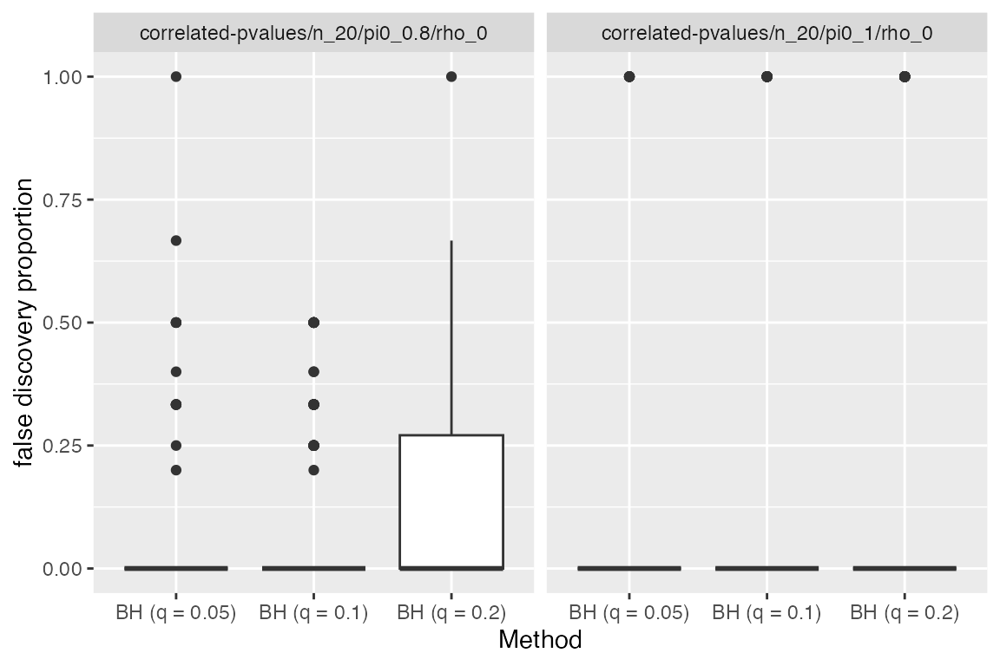
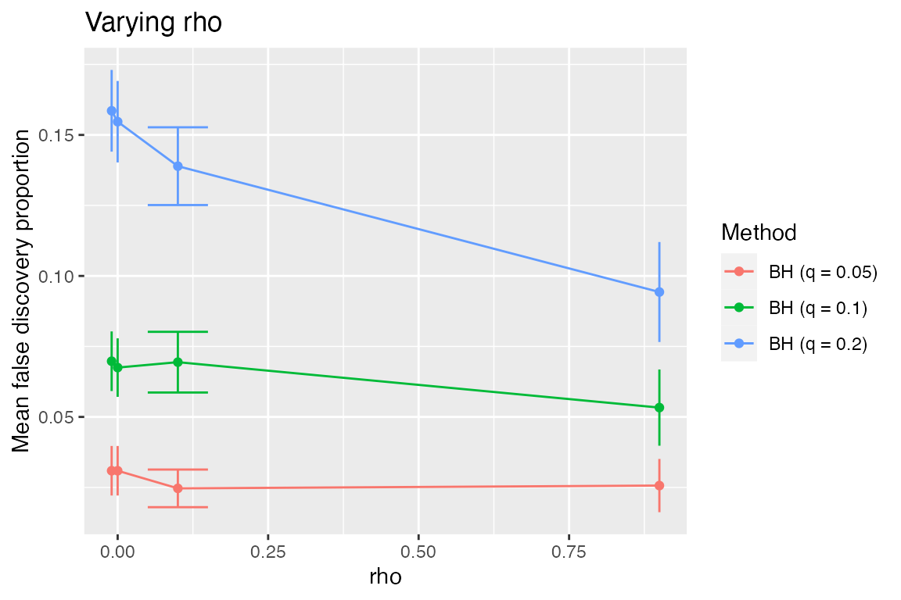
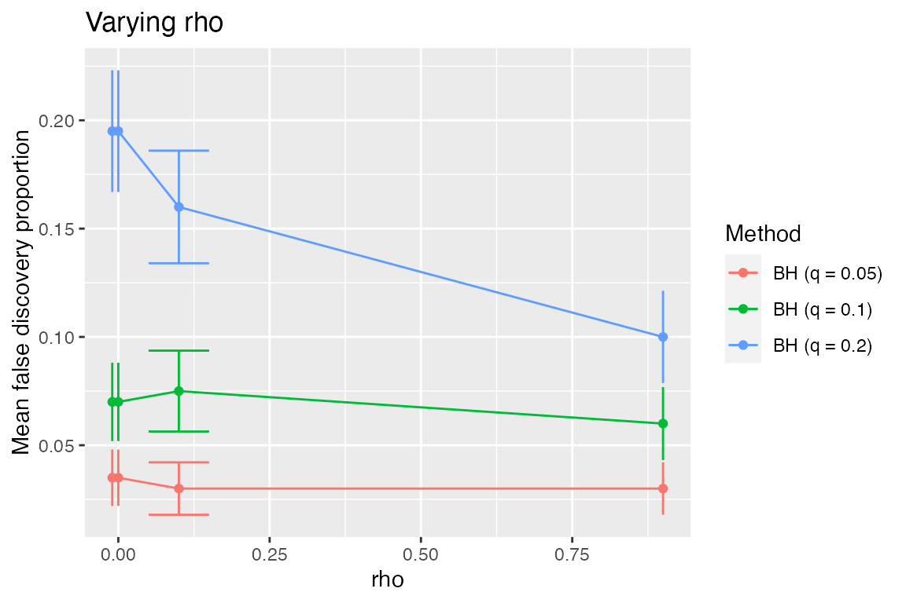

Suppose we wish to test \(n\) hypotheses, \(H_1,\ldots, H_n\), and we have a p-value \(\hat p_i\) for each hypothesis \(H_i\). That is,
\[ \mathbb{P}_{H_i}(\hat p_i\le \alpha) = \alpha. \]
Benjamini and Hochberg (1995) design a procedure (for when these p-values are independent) that controls what they call the false discovery rate (FDR), which is the expected proportion of the rejected tests that should not have been rejected:
\[ \mathbb{E}_{\{H_i:i\in S\}}\left[\frac{\sum_{i\in S}1\{H_i\text{ rejected}\}}{\max[1,\sum_{i=1}^n1\{H_i\text{ rejected}\}]}\right]. \]
Given a desired FDR \(q\), the BH procedure finds a data-adaptive threshold level \(\hat p(q)\) and rejects all \(H_i\) for which \(\hat p_i\le \hat p(q)\). The threshold level is given by comparing the sorted p-values \(\hat p_{(1)}\le \cdots \le \hat p_{(n)}\) to a line of slope \(q/n\) and identifying the largest p-value that is below this line. That is, \(\hat p(q)=\hat p_{(\hat i)}\) where \[ \hat i = \max\{i: \hat p_i \le q i / n\}. \]
In this simulation, we verify that the BH procedure works, and we investigate the effect that correlation has on the FDR control.
Main simulation
In the Models section below, we show the code for
make_correlated_pvalues, a function that generates a model
object given parameters \(n\) (the
number of hypotheses), \(\pi_0\) (the
fraction of hypotheses that are null), and \(\rho\) (the correlation between any pair of
test statistics). In the simulation below, we fix \(n=20\) and vary \(\pi_0\) and \(\rho\).
name_of_simulation <- "fdr"
sim <- new_simulation(name = name_of_simulation,
label = "False Discovery Rate") %>%
generate_model(make_correlated_pvalues, seed = 123,
n = 20,
pi0 = list(0.8, 1),
rho = list(-0.01, 0, 0.1, 0.9),
vary_along = c("pi0", "rho")) %>%
simulate_from_model(nsim = 25, index = 1:4) %>%
run_method(bh_methods, parallel = list(socket_names = 2)) %>%
evaluate(list(fdp, nd))The variable bh_methods is defined in the Methods
section below and corresponds to the BH procedure for four different
values of \(q\).
We begin by looking at the results when \(\rho=0\) (i.e., independent tests).
sim %>%
subset_simulation(rho == 0) %>%
tabulate_eval(metric_name = "fdp", output_type = "html",
format_args = list(digits = 1, nsmall = 2))| BH (q = 0.05) | BH (q = 0.1) | BH (q = 0.2) | |
|---|---|---|---|
| pi0 = 0.8, rho = 0 | 0.04 (0.01) | 0.08 (0.02) | 0.17 (0.02) |
| pi0 = 1, rho = 0 | 0.04 (0.02) | 0.08 (0.03) | 0.25 (0.04) |
It appears that the BH procedure does control the FDR at each stated \(q\) value. However, we also see that when \(\pi_0\) is less than 1, it tends to be more conservative. Indeed, Benjamini and Hochberg show that the FDR of BH does not exceed \(\pi_0q\).
Adding to a simulation
We might like to increase the number of simulations.
Suppose we return to this simulation several days later and wish to double the number of random draws used. In the above code, we had 100 draws, which were simulated in 4 chunks of 25 draws each. The simulator allows us to add to a simulation without requiring us to re-run parts of the simulation that have already been run.
If we had closed the R session without saving the image[^]: for the
sake of reproducibility, I like to always start with a fresh workspace,
so I can be sure that my functions aren’t calling a global variable that
I have forgotten about), we can open a new one in the directory that has
the files directory in it. We start by loading
sim, which is the Simulation object (containing all the
necessary pointers to saved files). Loading sim is fast
because it only loads the file locations, not the files themselves.
sim <- load_simulation("fdr")We do so by simply adding 4 more chunks, with index=5:8.
Each distinct value of index corresponds to a separate random
number generator stream. This is convenient because it means that we
do not have to rely on the state of the RNG after completing one chunk
to start the next one.
sim <- sim %>%
simulate_from_model(nsim = 25, index = 5:8) %>%
run_method(bh_methods, parallel = list(socket_names = 2)) %>%
evaluate(list(fdp, nd))We can look again at the table.
sim %>%
subset_simulation(rho == 0) %>%
tabulate_eval(metric_name = "fdp", output_type = "html",
format_args = list(digits = 1, nsmall = 2))| BH (q = 0.05) | BH (q = 0.1) | BH (q = 0.2) | |
|---|---|---|---|
| pi0 = 0.8, rho = 0 | 0.03 (0.009) | 0.07 (0.010) | 0.15 (0.014) |
| pi0 = 1, rho = 0 | 0.03 (0.013) | 0.07 (0.018) | 0.19 (0.028) |
Some plots
The FDR is the average of the false discovery proportion (FDP). We can look at these raw values (200 for each method-model pair).
sim %>%
subset_simulation(rho == 0) %>%
plot_eval(metric_name = "fdp")
When \(\pi_0=1\), we see that the FDP is either 0 or 1. This is because if we make any number of discoveries, then they will all be false (but if we do not make any discoveries, we have FDP=0).
We now investigate the effect of \(\rho\), the correlation between the test statistics. We now fix \(\pi_0=0.8\) and look at how the plots vary with \(\rho\).
sim %>%
subset_simulation(pi0 == 0.8) %>%
plot_eval(metric_name = "fdp", varying = "rho")
Since \(\rho\) is numeric, it might be more informative to look at the FDR as a function of \(\rho\).
sim %>%
subset_simulation(pi0 == 0.8) %>%
plot_eval_by(metric_name = "fdp", varying = "rho")
We see that the procedure becomes more conservative as the dependence increases, but still does control FDR (which was shown for positive dependence in Benjamini and Yekutieli, 2001). Looking at \(\pi_0=1\), we would like to check whether for negative \(\rho\) the procedure is anti-conservative.
sim %>%
subset_simulation(pi0 == 1) %>%
plot_eval_by(metric_name = "fdp", varying = "rho")
Creating a simulation based on a preexisting one
To investigate this particular question in greater depth, we might create a new simulation object based on the previous one. We’d like to increase the number of random draws for this particular setting, but don’t care about doing so for the others.
sim2 <- subset_simulation(sim, pi0 == 1 & rho == -0.01) %>%
rename("fdr-negdep") %>%
relabel("BH Procedure under negative dependence") %>%
simulate_from_model(nsim = 25, index = 9:20) %>%
run_method(bh_methods, parallel = list(socket_names = 2)) %>%
evaluate(list(fdp, nd))We remake the table (on the basis of 500 random draws) to check for anti-conservativeness.
tabulate_eval(sim2, metric_name = "fdp", output_type = "html",
format_args = list(digits = 1, nsmall = 2))| BH (q = 0.05) | BH (q = 0.1) | BH (q = 0.2) | |
|---|---|---|---|
| pi0 = 1, rho = -0.01 | 0.04 (0.009) | 0.08 (0.012) | 0.21 (0.018) |
Observe that at this point, sim and sim2
are two separate simulation objects that refer to some common simulation
results. For example, their Model and Draws
objects are the same.
## [1] TRUE## [1] TRUEWhen model and draws (and likewise
output and evals) are called on a simulation
object, they load the appropriate files referenced by the
Simulation object. The models m and
m2 are identical (and likewise for d and
d2) because both Simulation objects refer to
the same saved files. Thus, having multiple simulation objects does not
lead to copies of the (potentially large) results files being made.
Instead, only the references themselves are duplicated.
Components
Models
library(mvtnorm)
make_correlated_pvalues <- function(n, pi0, rho) {
# Gaussian copula model...
#
# n pvalues, the first n*pi0 of which are null, coming from a multivariate
# normal with all correlations rho.
sigma <- matrix(rho, n, n)
diag(sigma) <- 1
n0 <- round(n * pi0)
delta <- 2 # size of signal
mu <- rep(c(0, delta), c(n0, n - n0)) # n0 are null
new_model(name = "correlated-pvalues",
label = sprintf("pi0 = %s, rho = %s", pi0, rho),
params = list(n = n, rho = rho, sigma = sigma,
pi0 = pi0, mu = mu, delta = delta,
nonnull = which(mu != 0)),
simulate = function(n, mu, sigma, nsim) {
# this function must return a list of length nsim
x <- rmvnorm(nsim, mean = mu, sigma = sigma)
pvals <- 1 - pnorm(x)
return(split(pvals, row(pvals))) # make each row its own list element
})
}Methods
make_bh <- function(q) {
# q is the desired level of control for the FDR
new_method(name = paste0("bh", q),
label = sprintf("BH (q = %s)", q),
settings = list(q = q),
method = function(model, draw, q) {
p <- sort(draw)
cutline <- seq(model$n) * q / model$n
threshold <- max(p[p <= cutline], 0)
list(rejected = which(draw <= threshold))
})
}
qvalues <- c(0.05, 0.1, 0.2)
bh_methods <- sapply(qvalues, make_bh)Metrics
fdp <- new_metric(name = "fdp",
label = "false discovery proportion",
metric = function(model, out) {
fp <- setdiff(out$rejected, model$nonnull)
nd <- max(length(out$rejected), 1)
return(length(fp) / nd)
})
nd <- new_metric(name = "nd",
label = "number of discoveries",
metric = function(model, out) length(out$rejected))Conclusion
To cite the simulator, please use
citation("simulator")To cite package ‘simulator’ in publications use:
Bien J (2016). “The simulator: An Engine to Streamline Simulations.” Submitted. http://arxiv.org/abs/1607.00021.
A BibTeX entry for LaTeX users is
@Article{, title = {The {simulator}: An Engine to Streamline Simulations}, author = {Jacob Bien}, year = {2016}, url = {http://arxiv.org/abs/1607.00021}, journal = {Submitted}, }